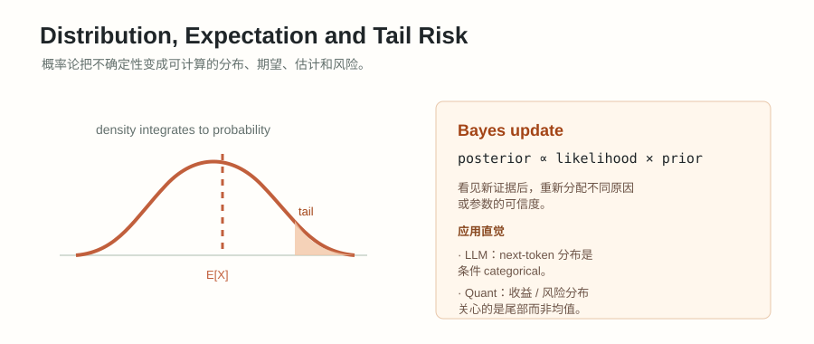

#011. 随机过程与量化风险：Markov、Martingale、Brownian、VaR/CVaR

#学习目标：从静态概率到时间中的不确定性
前面几章主要讨论一个随机变量：一次抽样、一个收益、一个标签、一个估计量。本章把视角改成“一串随机变量”：今天的价格、明天的价格、后天的价格；第 1 轮 RL 状态、第 2 轮 RL 状态；一次 MCMC 采样、下一次 MCMC 采样。只要随机性沿着时间展开，就进入随机过程的语言。
理解 \(X_t\) 不是一个固定数，而是时间 \(t\) 上的随机变量；整条序列 \(\{X_t\}_{t\ge0}\) 才叫随机过程。
知道 Markov 假设在简化什么：预测下一步时，只保留当前状态，丢掉更早历史。
理解平稳分布不是“永远不动”，而是整体状态比例经过转移后保持不变。
能区分 VaR 问“坏到什么门槛”，CVaR 问“超过门槛后平均多坏”，Sharpe 问“单位波动换来多少超额收益”。
- 看到 \(X_t\)、\(S_t\)、\(R_t\) 时，先说清楚时间下标 \(t\) 代表什么。
- 看到 \(P_{ij}\) 时，能读成“从状态 \(i\) 转移到状态 \(j\) 的概率”。
- 看到 \(\mathbb{E}[X_{t+1}\mid\mathcal{F}_t]\) 时，能读成“在当前已知信息下，对下一期的条件平均判断”。
- 看到 \(VaR_\alpha\)、\(CVaR_\alpha\)、Sharpe 时，能说明它们分别忽略了哪些风险。
#概念起点：随机变量随时间变化
一个随机变量 \(X\) 描述“一次不确定结果”。随机过程把它复制到很多时间点：\(X_0,X_1,X_2,\ldots\)。这里的下标不是幂，也不是样本编号，而是时间或步骤。例如 \(X_t\) 可以表示第 \(t\) 天市场处于牛市还是熊市，也可以表示第 \(t\) 步强化学习环境中的状态。
单个随机变量只回答“某件事分布如何”。随机过程额外回答“先后顺序如何影响未来”。量化里，收益的自相关、波动聚集、市场 regime 切换都不是单个分布能说清的；LLM/RL 里，当前 token、当前状态、当前策略也会影响下一步分布。
| 对象 | 可以建模成什么 | 时间依赖在问什么 |
|---|---|---|
| 每日收益 \(R_t\) | 随机变量序列 | 今天亏损后，明天波动是否更大？ |
| 市场状态 \(X_t\) | 有限状态过程 | 牛市、震荡、熊市之间如何切换？ |
| RL 状态 \(S_t\) | Markov decision process 的状态 | 当前状态和动作如何决定下一状态？ |
| MCMC 样本 \(Z_t\) | Markov chain | 反复转移后，样本是否来自目标分布？ |
#Markov chain：下一步只依赖当前状态
Markov chain 是一种离散时间随机过程。它的核心假设是：如果已经知道当前状态，那么更早历史对下一步没有额外帮助。公式写作：
这行公式要这样读：左边问“在知道当前状态 \(i\) 和全部过去历史的情况下，下一步到 \(j\) 的概率”；右边问“只知道当前状态 \(i\) 的情况下，下一步到 \(j\) 的概率”。Markov 假设说这两个概率相等，所以当前状态已经浓缩了预测下一步所需的信息。
有限状态 Markov chain 常用转移矩阵 \(P\) 表示。矩阵元素 \(P_{ij}\) 表示从状态 \(i\) 到状态 \(j\) 的概率。每一行都要加起来等于 1，因为从一个状态出发，下一步总要落到某个状态。
设天气只有两个状态：晴 \(S\) 和雨 \(R\)。如果今天晴，明天 80% 仍然晴、20% 变雨；如果今天雨，明天 60% 变晴、40% 仍然雨。写出转移矩阵，并计算“今天晴，后天雨”的概率。
按状态顺序 \((S,R)\)，转移矩阵是：
“今天晴，后天雨”有两条路径：晴 \(\to\) 晴 \(\to\) 雨，或晴 \(\to\) 雨 \(\to\) 雨。因此：
也可以用矩阵平方 \(P^2\)。\(P^2\) 的第一行第二列就是从晴出发两步后到雨的概率。
Markov chain 不是说历史完全没用，而是说“当前状态的定义已经吸收了历史里对未来有用的信息”。如果状态定义太粗，例如只用“涨/跌”而忽略波动和成交量，Markov 假设通常会很弱。
#平稳分布：长期状态比例
如果 \(\pi\) 是一个行向量，表示当前落在各状态的概率，例如 \(\pi=(0.75,0.25)\) 表示 75% 晴、25% 雨，那么走一步后的分布是 \(\pi P\)。平稳分布要求：
这行公式要分三层读：\(\pi=\pi P\) 表示“经过一次转移后分布不变”；\(\sum_i\pi_i=1\) 表示它是概率分布；\(\pi_i\ge0\) 表示每个状态概率不能为负。平稳不是说每条路径不变，而是说大量样本或长期比例稳定。
继续使用天气链：
求平稳分布 \(\pi=(a,1-a)\)。
代入 \(\pi=\pi P\)，只看第一个分量就够：
展开：
所以 \(0.8a=0.6\)，得到 \(a=0.75\)。因此：
含义是：如果这条链长期运行，并且满足通常的不可约、非周期等条件，那么长期大约 75% 时间在晴天状态，25% 时间在雨天状态。它不是说明天一定 75% 晴，而是在描述长期比例。
MCMC 的核心目标就是设计一条 Markov chain，让它的平稳分布等于我们想采样的目标分布。链跑得足够久后，保留下来的样本才近似来自目标分布。这里的关键问题不是“能不能写出转移”，而是“是否真的混合到了平稳分布”。
#Martingale：当前信息下没有可预测漂移
Martingale 常被翻译为鞅。它描述一种“公平游戏”：在当前所有信息下，下一期的条件期望等于当前值。设 \(\mathcal{F}_t\) 表示到时间 \(t\) 为止你知道的全部信息，例如历史价格、历史收益、已发生的事件。Martingale 条件是：
这行公式要这样读：\(\mathbb{E}[\cdot\mid\mathcal{F}_t]\) 是“基于当前信息做条件平均”；\(X_{t+1}\) 是下一期随机值；等号右边 \(X_t\) 是当前值。它说的不是下一期一定等于当前值，而是说在条件平均意义上没有可预测的上升或下降。
当前资金为 \(X_t\)。下一轮掷公平硬币，正面赢 1，反面输 1。问 \(X_t\) 是否是 martingale？
下一期资金为：
在已知当前资金和历史信息的情况下，条件期望是：
所以这是 martingale。注意路径会波动，资金可能连续亏损；martingale 只约束条件均值，不保证风险小。
金融数学里常说“风险中性测度下，折现资产价格是 martingale”。这不是说真实世界里股票没有风险溢价，而是说换到定价用的概率测度后，折现价格没有可套利的条件漂移。面试时要把“真实概率下的收益预期”和“风险中性测度下的定价工具”区分开。
#Brownian motion 与 Ito 直觉
Brownian motion \(W_t\) 是连续时间随机噪声的基础模型。可以把它理解为“很多很小、独立、均值为 0 的随机冲击累积起来”的极限。它有三个常用性质：
在资产价格模型里，常见的几何 Brownian motion 写成：
这里 \(S_t\) 是价格，\(\mu S_tdt\) 是确定性漂移项，\(\sigma S_tdW_t\) 是随机冲击项。\(dt\) 表示很小的时间长度，\(dW_t\) 表示这段极短时间里的 Brownian 增量。要注意量级：\(dW_t\) 的标准差是 \(\sqrt{dt}\)，所以它比 \(dt\) 大；但 \((dW_t)^2\) 的量级是 \(dt\)。这正是 Ito 修正出现的原因。
普通链式法则只保留一阶变化。随机微积分里，因为 \((dW_t)^2\) 不能忽略，二阶项会留下来。对 \(\log S_t\) 来说，二阶曲率是负的，所以会多出 \(-\frac12\sigma^2dt\)。直觉上，波动会拖累对数增长率，这也是“算术平均收益”和“几何增长率”不同的重要来源。
假设一个资产今天 100，明天一半概率涨到 110，一半概率跌到 90。算术平均价格是多少？平均对数收益是多少？
算术平均价格是：
所以价格的算术平均没有变。但对数收益的平均是：
即使平均价格不变，平均对数增长也为负。这和 Ito 公式里的 \(-\frac12\sigma^2\) 是同一种直觉：波动本身会侵蚀复利增长。
#VaR、CVaR 与 Sharpe
量化风险通常从收益 \(R\) 转成损失 \(L\)。一个简单约定是 \(L=-R\)：收益为正时损失为负，收益为负时损失为正。VaR 和 CVaR 都是围绕损失分布定义的。
VaR 的优点是直观：例如 95% VaR 是 3%，可以说“在模型估计下，95% 情况损失不超过 3%”。但它不告诉你超过 3% 后会损失多少。CVaR 正是为了看尾部严重程度。Sharpe 则把收益和波动合成一个效率指标，但它对厚尾、自相关、样本长度、交易成本和容量非常敏感。
某策略有 10 个历史日损失样本，已经从小到大排序：
粗略求 90% VaR 和 90% CVaR。
10 个样本的 90% 分位数可以粗略取第 9 个从小到大的损失，即：
超过或等于这个门槛的尾部损失是 \(3.0\%\) 和 \(8.0\%\)。因此：
解释时要说清：VaR 告诉我们“90% 水平的损失门槛约为 3%”；CVaR 告诉我们“进入最坏尾部后，平均损失约为 5.5%”。同样的 VaR 可以对应完全不同的尾部形状，所以只看 VaR 会低估极端损失。
如果一个策略大多数时候小赚，偶尔巨亏，它可能在短样本里有不错 Sharpe，却有很差的 CVaR。量化风控不能只用均值和标准差，还要看尾部、回撤、杠杆、流动性和极端情境。
#LLM、RL、MCMC 与量化连接
这一章的概念不是只属于金融数学。它们背后是一套“状态、转移、条件信息、长期分布、尾部风险”的语言，LLM、RL、MCMC 和量化都会用到。
| 概念 | 在 LLM / RL / MCMC 中 | 在量化中 | 面试要说清的边界 |
|---|---|---|---|
| 随机过程 | token 序列、rollout 轨迹、采样链。 | 价格、收益、波动和订单流随时间变化。 | 样本不是孤立点，时间依赖会影响估计。 |
| Markov chain | MCMC 通过 Markov 转移逼近目标分布；RL 状态转移常以 Markov 假设建模。 | 市场 regime 切换、信用评级迁移、库存状态转移。 | 当前状态必须足够表达历史，否则 Markov 假设不成立。 |
| 平稳分布 | MCMC 的目标是让链的平稳分布等于目标 posterior 或目标采样分布。 | 长期状态占比、稳定 regime 假设、长期风险暴露。 | 平稳分布存在不等于有限样本已经混合好，也不等于市场永远平稳。 |
| Martingale | 策略梯度中的 advantage 常以条件期望为基准理解；公平估计器也会用条件期望语言。 | 无套利定价、折现价格、不可预测收益假设。 | 没有条件漂移不代表没有波动或没有尾部风险。 |
| Brownian / Ito | 扩散模型和连续时间生成模型会借用随机微分方程语言。 | Black-Scholes、连续时间价格模型、波动率建模。 | 连续路径、正态增量和常数波动都是强假设，真实市场常有跳跃和厚尾。 |
| VaR / CVaR / Sharpe | 评估生成系统或 agent 时，也需要看平均表现之外的失败尾部。 | 组合风控、止损、资本占用、策略筛选。 | 平均指标不能替代尾部指标，短样本 Sharpe 很容易误导。 |
#常见误区与最后检查清单
| 常见误区 | 为什么错 | 正确说法 |
|---|---|---|
| Markov chain 等于历史完全没用。 | 历史可能有用，只是被当前状态摘要掉了。 | 关键是状态设计是否足够包含预测未来的信息。 |
| 平稳分布表示每一步分布都自动稳定。 | 初始分布不一定平稳，有限时间也可能没混合。 | 平稳分布是转移后不变的分布，长期收敛还需要额外条件。 |
| Martingale 表示价格不会变。 | Martingale 只约束条件期望，不约束路径波动。 | 公平游戏也可能大起大落，甚至有严重尾部风险。 |
| Brownian motion 是真实市场的完整描述。 | 真实市场有跳跃、厚尾、波动聚集、交易摩擦。 | Brownian 是基础近似和定价语言，不是完整现实。 |
| VaR 越小风险一定越小。 | VaR 不看超过门槛后的严重程度。 | 需要同时看 CVaR、最大回撤、压力测试和流动性风险。 |
| Sharpe 高就可以上线。 | Sharpe 可能来自短样本、过拟合、未计成本或隐藏尾部。 | 还要看样本外、交易成本、容量、自相关、尾部和风控约束。 |
- 我能用一句话解释随机过程和单个随机变量的区别。
- 我能读懂 \(P_{ij}\)，并检查转移矩阵每一行是否和为 1。
- 我能用 \(\pi=\pi P\) 求两状态 Markov 链的平稳分布，并解释它的长期比例含义。
- 我能说明 martingale 是“条件期望不变”，不是“路径不变”或“没有风险”。
- 我能说出 Brownian motion 的独立增量、正态增量和 Ito 二阶修正直觉。
- 我能用一个离散损失样本计算 VaR 和 CVaR，并解释为什么 CVaR 更关注尾部。
- 我能说明 Sharpe 的分母是波动，不是最大亏损；因此 Sharpe 不能替代尾部风险指标。
- 我能把 Markov chain 连接到 RL/MCMC，把 VaR/CVaR/Sharpe 连接到量化风控和策略评估。